Animations¶
Animations are animated patterns rendered to a Section. Animations are split into multiple frames (called cycles). On each update, the Animation renders a new cycle and sets each Pixel to the appropriate color. When performed quickly, this process creates a smooth, continuous visual effect.
Animation Types¶
The following animation types are available:
Name |
Description |
Preview |
Orientations |
Cycles |
Reversible |
|---|---|---|---|---|---|
Blink |
Cycles between the Solid Animation and off. |
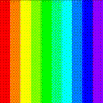 | Horizontal, Vertical |
2 |
|
Cycle |
Cycles through the Palette one color at a time. |
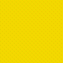 | [Palette size] |
X |
|
Fire |
Displays a fire with rising smoke. |
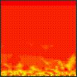 | Horizontal |
||
Lightning |
Displays lightning bolts arcing across the Section. |
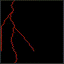 | Horizontal, Vertical |
||
Mandelbrot |
Displays a Mandelbrot set with colors radiating to/from the center. |
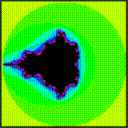 | Horizontal |
[Palette size] |
X |
Plasma |
Displays a set of orbs with radiating colors. |
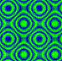 | [Palette size] |
X |
|
Radial |
Radiates colors to/from the center of the grid in concentric circles. |
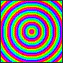 | Horizontal, Vertical |
[Palette size] |
X |
Random |
Sets each Pixel to a random Palette color. |
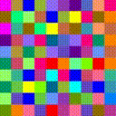 | |||
Solid |
Sets each row or column of the grid to the next Palette color. |
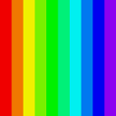 | Horizontal, Vertical |
1 |
|
Sparkle |
Activates a select number of random pixels. |
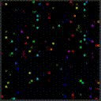 | Horizontal, Vertical |
||
Wave |
Scrolls the Palette across the Section. |
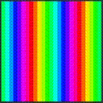 | Horizontal, Vertical |
[Palette size] |
X |
Creating an Animation¶
Animations are created and managed through Sections. To create an Animation, use Section::set_animation(AnimationType type, bool preserve_settings). The AnimationType is the type of Animation you want to create. When switching from one Animation to another, preserve_settings copies the old Animation’s settings to the new Animation. Otherwise, the new Animation is created with default values.
Tip
Animations automatically scale to the Section, so you can use any Animation with any grid size or layout.
Animations require a Palette, which you can set using Animation::set_palette(). An Animation won’t run until a Palette is set.
This example creates a new blinking animation using the Colorwheel Palette included with PixelMaestro:
#include "core/palette.h"
#include "core/section.h"
Section section(10, 10);
// Create a blink Animation
Animation& animation = section.set_animation(AnimationType::Blink, false);
animation.set_palette(ColorPresets::Colorwheel_Palette);
If a Section already has an Animation, set_animation() replaces the existing Animation. If you want to retain the old Animation’s properties (including its Palette, orientation, and timing), set the preserve_settings parameter to true. Leaving this parameter omitted defaults to false.
Let’s customize the blink Animation we just created, then replace it with a new Animation while retaining its settings:
// Set a blink Animation
Animation& old_animation = section.set_animation(AnimationType::Blink);
old_animation.set_palette(ColorPresets::Colorwheel_Palette);
old_animation.set_timer(500);
old_animation.set_fade(false);
old_animation.set_orientation(Animation::Orientations::Vertical);
// Set a wave Animation and inherit the Palette, timer, fade, and orientation of the blink Animation.
Animation& new_animation = section.set_animation(AnimationType::Wave, true);
Animation Cycles¶
Each Animation is made up of multiple repeating patterns called cycles. On each cycle, the Animation generates a new pattern and stores it in the map.
The number of cycles varies by Animation. For example, SolidAnimation has one cycle (on), BlinkAnimation has two cycles (on and off). For many Animations, it’s equal to the number of colors in the Palette. For example, WaveAnimation has as many cycles as colors in its Palette (one cycle per color). After the last cycle completes, the Animation starts over from the beginning.
Randomly generated Animations (e.g. SparkleAnimation) don’t use cycles since they generate randomized patterns each time.
Setting the Color Palette¶
The Palette determines which colors the Animation assigns to each Pixel. When creating an Animation, you must set the Animation’s Palette or else the Animation won’t run. You can do this using Animation::set_palette(Palette& palette).
In this example, we create a Palette with three colors: red, green, and blue. Depending on the Animation, each Pixel will display one of these three colors:
Colors::RGB colors[] = {
ColorPresets::Red,
ColorPresets::Green,
ColorPresets::Blue
};
Palette my_palette(colors, 3);
animation.set_palette(my_palette);
Tip
You can find pre-defined colors and Palettes in the ColorPresets class.
Setting Additional Options¶
Some Animations support additional parameters. For example, LightningAnimation lets you specify how many bolts are drawn on each frame.
Section section(10, 10);
// Create a Lightning Animation
Animation& animation = section.set_animation(AnimationType::Lightning);
// Draw 3 bolts on each update
static_cast<LightningAnimation&>(animation).set_bolt_count(3);
The options available are:
Animation |
Option Name |
Description |
|---|---|---|
Fire |
Multiplier |
The size of the flames. |
Lightning |
Bolts |
The number of bolts displayed on each cycle. |
Lightning |
Fork Chance |
The chance for a bolt to create a fork. |
Lightning |
Drift |
The direction and distance that a bolt will travel. |
Radial |
Resolution |
The width of each “spoke” when oriented vertically. |
Plasma |
Resolution |
The detail level of each plasma orb. |
Plasma |
Size |
The size of each plasma orb. |
Sparkle |
Threshold |
The chance for any one Pixel to be activated. |
Wave |
Skew |
How far each row is offset from the previous row. |
Setting the Orientation¶
The orientation determines the direction that the Animation moves in. You can change the orientation using Animation::set_orientation(). The HorizontalFlipped and VerticalFlipped orientations simply mirror the Animation across each axis. By default, Animations use the Horizontal orientation.
// Changes the orientation from horizontal to vertical
animation.set_orientation(Animation::Orientation::Vertical);
Some Animations (such as CycleAnimation) aren’t affected by orientations.
Changing the Animation Timing¶
The timing interval is the amount of time (in milliseconds) that a single cycle takes to finish. For example, an Animation with 5 cycles and an interval of 100 will take 500 milliseconds (5 * 100 milliseconds) to complete, while the same Animation with an interval of 500 will take 2500 milliseconds (5 * 500) to finish. You can set the Animation’s timing interval via Animation::set_timer().
animation.set_timer(500);
The delay interval is the amount of time (in milliseconds) that the Animation waits before starting a new cycle. For example, an Animation with a timing interval of 1000ms and a delay interval of 500ms will complete its cycle in the first 500ms, then wait for an additional 500ms before running the next cycle.
animation.set_timer(1000, 500);
Note
Delay is only available when fading is enabled.
Toggling Fading¶
By default, Pixels gradually fade between Animation cycles. When fading is disabled, Pixels change instantly from one color to the next at the end of the cycle. You can disable fading using Animation::set_fade().
// Turns fading off
animation.set_fade(false);
Another way to disable fading is by using the PIXEL_DISABLE_FADING preprocessor directive. This also reduces the number of CPU cycles and RAM used per Pixel, which is better for low-power devices.
Changing the Center¶
For some Animations (such as RadialAnimation and MandelbrotAnimation), you can change the location where the Animation is centered. For RadialAnimation, for example, this changes the point where colors radiate from. You can set the center along either the x or y axis.
Tip
You can set the center outside of the grid.
section.set_dimensions(32, 32);
// By default, the Animation center is set to the Section's center.
// Here, we move it to the Section's bottom-left quadrant.
animation.set_center(8, 24);
How Animations Work¶
Each Animation generates a map, which is a 2D grid of bytes with the same dimensions as the Section. Each index corresponds to a Pixel and contains a byte corresponding to a color in the Animation’s Palette. The result is a one-to-one mapping of Palette colors to Pixels. When the Animation updates, it refreshes the map, retrieves the actual color from the Palette, and sends the color to the Pixel.
Using maps instead of writing colors directly to Pixels:
Avoids having to recalculate each Pixel’s color on each frame where possible
Saves processing time on single-frame Animations like
SolidAnimationandWaveAnimationAllows for Animations like
FireAnimation, which build off of the previous frame
The map automatically regenerates when:
The Section’s dimensions changes
The Animation orientation changes